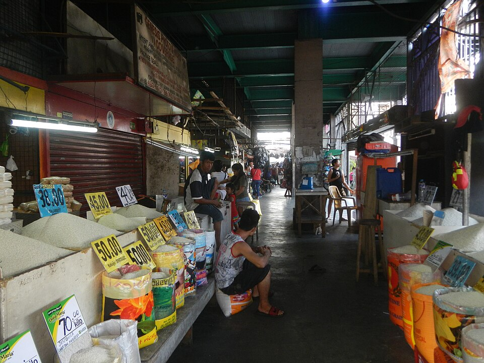
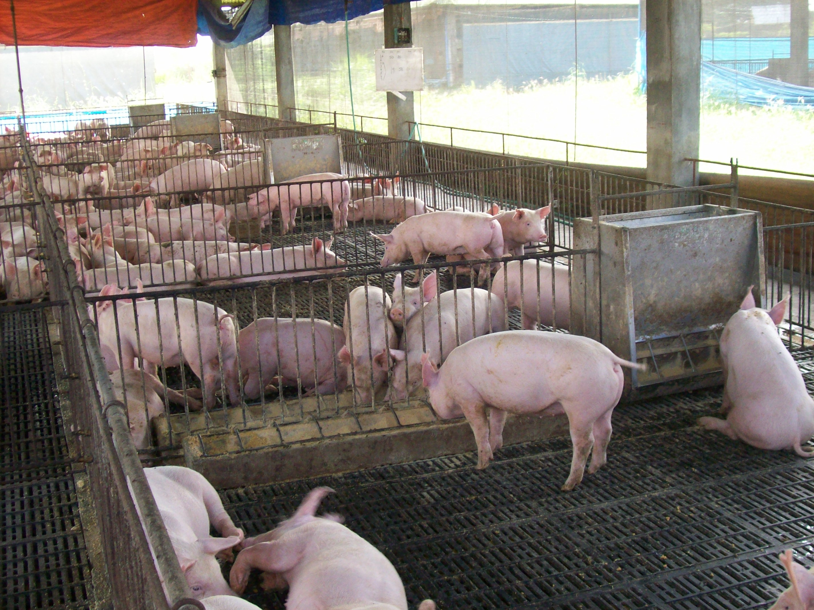
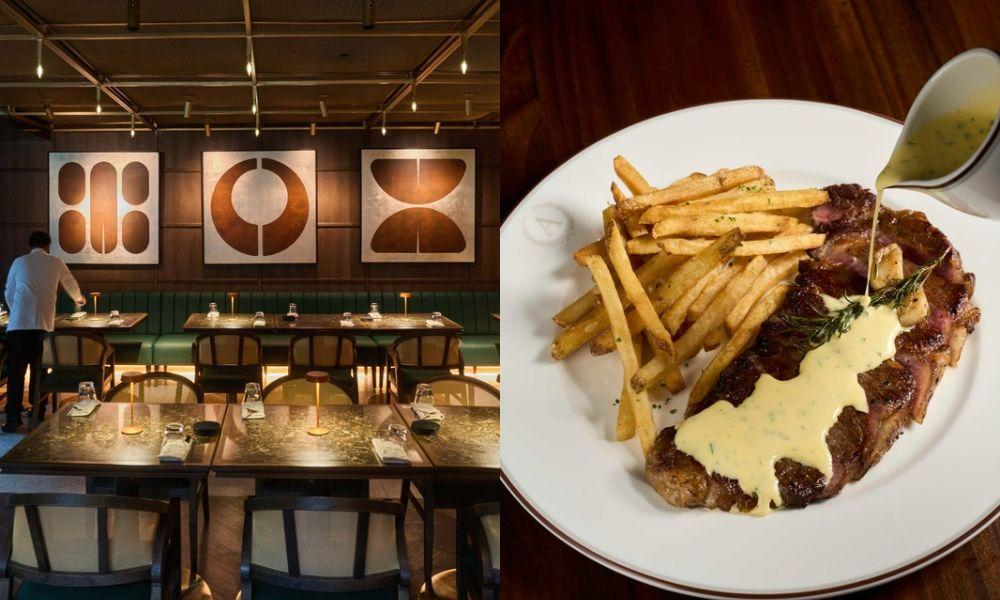

PSA second print: rice stuck near ₱56, cabbage +44% in six weeks, pork soft
15–17 Sep 2026 (released 30 Sep)
PSA’s second September retail situationer (Sep 15–17, LogisticsNews Sep 30): well-milled rice averaged ₱56.07/kg — a touch below the first-phase ₱56.48 and mid-August ₱56.29, but still +18.7% versus mid-September 2025’s ₱47.22. Fresh pork (meat with bones) eased to ₱295.58 from ₱297.78 / ₱298.39, and sits −9.6% year-on-year versus ₱327.03. Cabbage is the whip: ₱143.85, up 14.8% from the first September phase (₱125.29), +43.7% from mid-August’s ₱100.11, and +29.3% versus last year’s ₱111.26. Galunggong ₱242.77 (soft MoM, still +4.5% YoY). Cooking oil ₱201.47/L (+7.9% YoY). Red onion ₱144.86 (−19.7% YoY). Calamansi ₱89.90. Context the kitchen already felt: DOST-PCAARRD’s Sep 22 advisory stitches Habagat + TCs Luis/Maymay/Neneng/Pilandok into a ₱4.38B DA-DRRM damage print (HVCs ₱1.38B) and shows the classic glut-then-spike — Benguet farmgate cabbage near ₱5/kg mid-August while NCR Bantay Presyo ran pechay Baguio +111%, celery +102%, romaine +97%, iceberg +86%, cabbage varieties +71–82% from Aug 17 to Sep 9. Same advisory’s Los Baños Batong Malake check: cabbage ₱85–90 → ₱125–130, sayote ₱65–75 → ₱95–100, sitaw ₱80–90 → ₱145–165 into early September. Operator read for Calamba: yesterday’s El Niño corn bulletin was the feed/protein forward risk; today’s PSA is the plate receipt. Rice is the sticky floor under every rice meal and every QSR value stack — do not rewrite the rice plate overnight. Highland/lowland veg is where you float SKUs and specials. Soft pork retail is not a permanent gift if the DA tariff restore lands; treat it as a window, not a new baseline. Dual-source greens stay on — Batong Malake already proved the spike is local, not just Divisoria theater.
Open LogisticsNews / PSA · Open PCAARRD veg advisory

DA floats pork tariff restore — farmgate ₱150 while retail stays soft
25 Sep 2026
DA Press Office: Agriculture Secretary Francisco Tiu Laurel Jr. sat with hog leaders to reverse plunging farmgate prices. The prescription on the table is restoring pork tariffs toward pre-ASF levels — already discussed with President Marcos. DA’s phased pitch: +10 percentage points in 2027, lifting in-quota / out-quota from 15% / 25% to 25% / 35%, then 30% / 40% in 2028. Backdrop: local hog production +6% in H1 2026 while imports and inventories stayed high; farmgate fell from ₱215/kg in June 2025 to ₱150/kg in August 2026. Industry ask list: time-bound QRs, local shipping permits and testing for imported frozen meat, tighter scrutiny of low-tariff declarations, updated reference values against undervaluation. DA separately wants a tariff line for frozen pork jowls — now a major import SKU competing with local pork in retail and food service. Tiu Laurel also opposed further tariff cuts on imported meat and corn. Hog groups sought DA/DBP help to tap a USDA facility for feed raws (corn, wheat, soy). Operator read: PSA’s soft retail pork (₱295.58, −9.6% YoY) and this farmgate crash are the same coin. If Malacañang green-lights the 2027 step-up, import-dependent protein and anything using jowls/trim gets repriced. For a Calamba kitchen: lock current hog/pork contracts while retail is soft; stress-test 2027 menus against 25/35% tariffs; watch jowl-heavy SKUs (siomai, dumpling, some braises) if that tariff line lands. Do not celebrate cheap pork as structural — celebrate it as a hedge window before policy closes it.
Open DA

Sebastian’s Rockwell: Antonio’s without the white tablecloth
30 Sep 2026 (open early Sep)
GMA Lifestyle: The Antonio’s group’s newest concept, Sebastian’s, is live on the ground floor of Edades Tower in Rockwell, Makati — all-day dining that runs Breakfast of Antonio’s from 7am–12pm, then shifts into Antonio’s fine-dining lane through dinner. Basti Escalante’s line: “Antonio’s without the white tablecloth” — oysters, escargot, tartare, foie beside club sandwiches, fish and chips, shareable pizza (smoked cured salmon called out), with steak frites (wagyu, house fries, béarnaise) as the early house favorite. Filipino comfort sits on the board too: Manang Myrna’s pork sinigang, Chef Ricky’s beef mechado, adobo sa puti — family kitchen, not tourist kit. Barely two weeks open; a midweek night already packed with executives, families, and date tables. Naming map: Antonio’s (father), Pedro the Grocer (brother), Sebastian’s (Basti). Parallel catchment tape (Insider PH Sep 25): SMHCC’s Culinaire showcase also flagged upcoming SMX Trade Halls in Sta. Rosa, Laguna and Sto. Tomas, Batangas — MICE capacity landing on the same south belt you already watch for Nuvali / SM Sto. Tomas grocery and dining densify. Operator read for Calamba: do not copy Rockwell rent or foie ASP. Steal the hours architecture — breakfast casual that earns the morning, dinner craft that earns the night — and the unashamed Filipino comfort SKUs that keep locals returning when tourists leave. If you ever extend a Calamba door past lunch, Sebastian’s is the proof that “everyday excellence” can carry both dayparts without diluting the brand. Treat SMX Sta. Rosa / Sto. Tomas as future weekday event traffic on your flanks, not a reason to bid up a lifestyle rent that still needs a Tuesday cover.
Open GMA / Sebastian’s · Open Insider PH / SMX pipeline